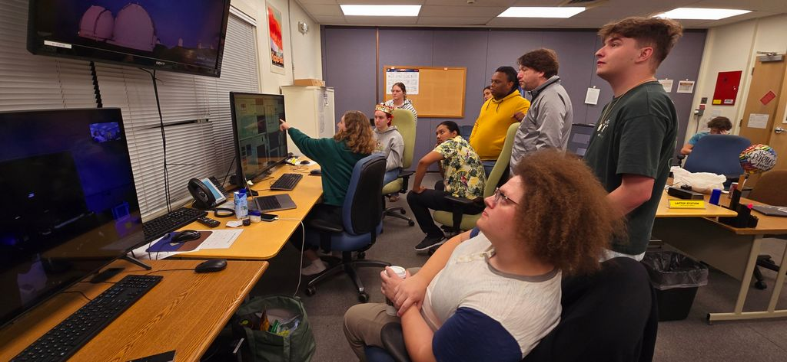
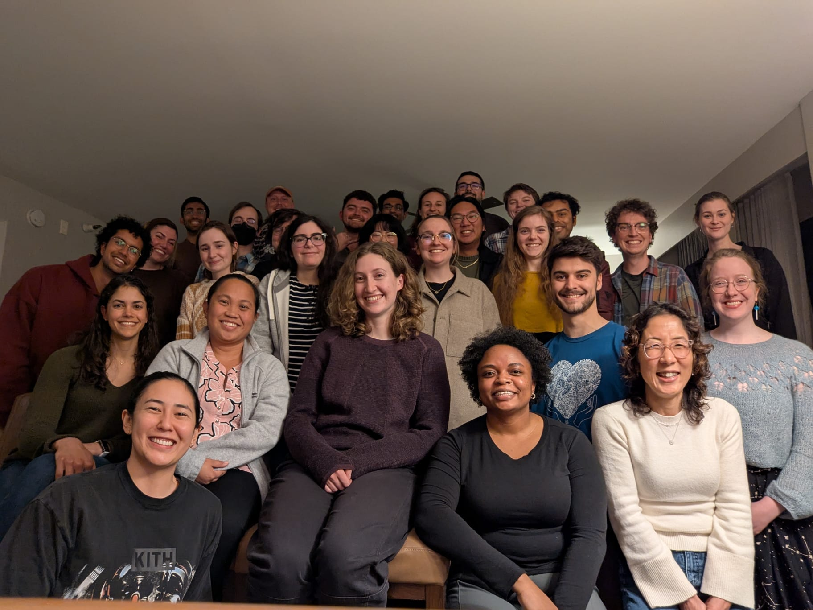

Philosophy
As an astronomy student, the most surprising thing I learned was that our science is full of assumptions — in order to build our understanding of the Universe, we smooth over some of the nuance we know must exist but lack data or physics to explain. I believe excellent astronomers learn to wield these assumptions wisely: to always understand when certain assumptions are appropriate to make, as well as their impact on scientific outcomes. This same concept applies to the classroom, where learners arrive as complete individuals holding rich and varied preconceptions, lived experiences, and learning styles.
My goal as an educator is to create a safe, collaborative environment that mirrors authentic research experiences, where learners can practice critical thinking, solve problems together, and develop both literacy and identity in science. I am committed to developing transformed curricula where multiple perspectives are centered, student development is considered holistically and relationally, and both myself and the learners are empowered to challenge assumptions and contribute to furthering our collective understanding of the cosmos.
Experience

In both spring 2024 and 2025, I guest taught the advanced undergraduate astronomy lab at UH Hilo, in collaboration with Professors Nicole Drakos and Pierre Martin. After a classroom session on the obscured Universe, observational techniques, and multi-object spectroscopy, I hosted the class on my PI observing runs with Keck/MOSFIRE.

In 2025, I participated in the Institute for Science and Engineer Educators (ISEE) Inquiry and Design Institutes as part of the Professional Development Program. With astronomers Jackie Champagne and Maria Straight, we designed an inquiry-based lesson on signal sampling for summer undergraduate research students at UT Austin.